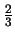
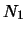
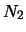
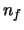

suivant: Et en vrai
monter: Enfin en finir avec
précédent: Introduction
Une mère a deux enfants dont l'un est un garçon. Quelle est la probabilité que
l'autre soit une fille ?
Les hypothèses tacites de ce problème sont :
- P("avoir un garçon")=P("avoir une fille")=
 ,
,
- Le sexe du second enfant est indépendant du sexe du premier.
- L'expression "dont l'un est un garçon" signifie bien sûr "dont l'un au moins est un
garçon".
Ces hypothèses sont sous entendues dans l'ennocé et elles correspondent assez bien à
l'expérience réelle.
Nous affirmons d'autre part que ce problème est bien posé car la validation
expérimentale est aisée et l'expérience est entièrement définie par l'énnoncé.
Il suffit de générer une suite de 
tirages d'un couple de variables aléatoires bivaluée et de loi uniforme. On
éliminera les cas pour lesquels il n'y a aucun garçon (il restera 
familles), et on comptera le nombre de familles 
avec une fille. On verra que le
ration

tendra très
rapidement vers
 (loi des grands
nombres).
(loi des grands
nombres).
suivant: Et en vrai
monter: Enfin en finir avec
précédent: Introduction
Pierre Dangauthier
2004-10-18